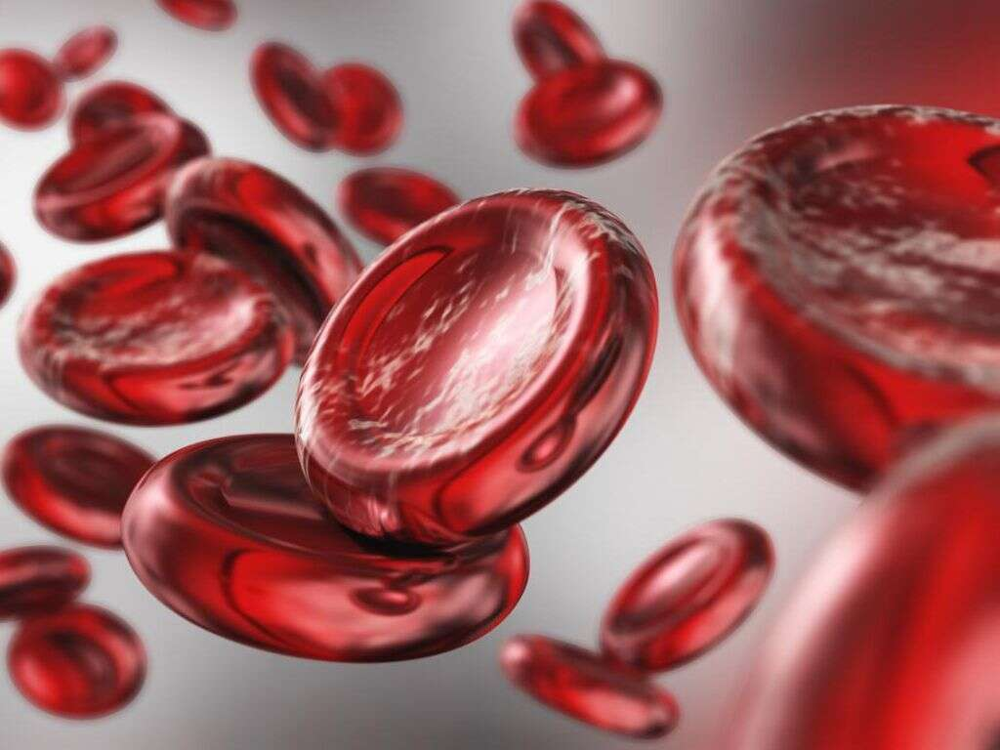

Anemia
Descripción
La anemia es una afección que se caracteriza por la disminución de glóbulos rojos o hemoglobina en la sangre, lo que impide que el cuerpo reciba suficiente oxígeno.
Causas
Puede ser causada por una producción insuficiente de glóbulos rojos, destrucción excesiva de glóbulos rojos o pérdida de sangre.
Síntomas
- Fatiga
- Debilidad
- Palidez
- Dificultad para respirar
Pruebas y exámenes
Para diagnosticar la anemia, se realizan varios exámenes de sangre, siendo el hemograma el más importante, que evalúa la cantidad de glóbulos rojos y hemoglobina en la sangre.
Tratamiento
Suplementos de hierro, medicamentos, cambios en la dieta y tratamiento de la causa subyacente en caso de haberla.
Expectativas
Incluyen la mejora de la educación y el acceso a la salud, así como la implementación de programas de suplementación y trtamiento adecuados.